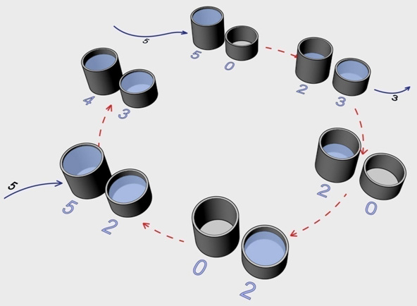

目标形式化（goal formulation）
先把“想要什么”说清楚：去深圳北站？让房间干净？
我要到深圳北站 人工智能原理与应用第 3 课 · 搜索求解与树搜索
人工智能原理与应用第 3 课 · 搜索求解与树搜索
01 · 开场
你每天都在“搜索”：
它们有一个共同的名字——搜索（Search）：在很多种可能的走法里，找出一条能到目标的路。
02 · 问题求解
你现在在一个地方，叫当前状态；你想去另一个地方，叫目标状态。中间有一段差距。
问题求解（problem-solving）：用一连串动作，把这段差距补上的过程。
一个完整的“问题求解”分四步：
先把“想要什么”说清楚：去深圳北站？让房间干净？
我要到深圳北站把目标变成计算机能处理的形式：规定状态、动作、转移、代价（下一页专门讲）；
把地图上的路口、能走的路记下来在状态空间里找一条从当前状态到目标状态的路径（解）；
导航找出一条路线照着解，一步一步真的去做。
跟着导航开过去这节课先只讨论：这条路到底走不走得到？之后的课程再讨论——哪条路更快、哪条更省钱。
备注：本部分内容只考虑最简单的环境，即回合式的、单智能体的、完全可观测的、确定性的、静态的、离散的和已知的环境，复杂的环境（例如环境是未知的），在本章节不做考虑。
03 · 为什么研究搜索
04 · 问题定义
定义搜索问题需要以下因素（四个必选）：
要搜索的状态空间。状态空间必然涉及到对实际问题的抽象。
最能代表你当前状态的初始状态。
你想要达到的理想（或目标）状态。
允许在状态间移动的操作（或后继函数）。这些动作是你可以实际执行的动作的抽象。
成本，代表从一个状态到另一个状态（采取行动，前进到下一个状态）的成本。
启发规则，帮助指导搜索过程。
每个状态是一个不可分割的整体，表示形式 State 1、State 2、State 3…；例如棋盘上的棋谱摆法。
状态由多个属性/变量组成，每个变量有取值；表示形式 State1 = {变量1=值1, 变量2=值2, …}；例如围棋棋盘用每个交叉点表示：(3,3)=黑，(4,4)=白，(10,10)=空。
状态 = {对象 + 对象之间的关系}；例如围棋棋子的连接关系：黑子 A 与黑子 B 相邻形成一个“气”，白子 C 被黑子群包围，黑子群 D 还有 2 个气。
05 · 搜索问题的两大类
不知道目标在哪，按固定规矩把路系统试一遍。本讲主线。
知道“大概方向”（启发式），更聪明。后面课程。
06 · 案例一
教材经典例子：罗马尼亚地图。你站在西北小城 Arad，要去首都 Bucharest，每条路上标了英里数。
课堂任务：对照第 4 页的四个必选要素，把例子逐条填出来（先自己填，再点开核对）：
07 · 案例二
3×3 格子，8 个数字块＋1 个空格。规则：把数字块滑进空格（＝移动空格）。
起始：7 2 4 / 5 _ 6 / 8 3 1； 目标：1 2 3 / 4 5 6 / 7 8 _。
四个必选要素核对
08 · 案例三
两个无刻度罐子：3 升、4 升。能做：装满、倒空、互倒（倒到一满或一空为止）。
状态写成一对数 (3 升罐里，4 升罐里)，如 (0,0) 两个都空。目标示例：(0,2)。
四个必选要素核对

09 · 后继
转移模型 RESULT(s, a)：输入状态 s 与动作 a，输出单个后继状态；是问题形式化的定义部件。
后继函数 SUCCESSORS(s) = {⟨a, RESULT(s,a)⟩ ｜ a ∈ ACTIONS(s)}：输入状态 s，输出全部可行动作的 ⟨动作, 后继状态⟩ 集合；是搜索算法扩展节点时实际调用的接口。
水罐例子：RESULT((3,0), 转-3-到-4) = (0,3)；SUCCESSORS((3,0)) = { ⟨空-3, (0,0)⟩, ⟨满-4, (3,4)⟩, ⟨转-3-到-4, (0,3)⟩, … }。
一句话记法：转移模型是“查一个动作的结果”，后继函数是“把所有可行动作各查一遍”；页面/课件里“动作（后继函数）：空-3-Gallon…”列出的其实是动作集 ACTIONS(s)。
10 · 树搜索
从初始状态出发，每次从边界中取出一个节点扩展，把生成的新节点放入边界，重复直到找到解或边界为空。这个过程展开后形成一棵搜索树——注意节点是“路径”而非状态，同一状态可在树中出现多次。
把“先扩展谁”的过程显式展开成树，才能比较不同选择策略的性能；树搜索对应 TREE-SEARCH 主循环。
起点 Arad。
11 · 走一遍
路径代价 450 与 418，哪条更低？
12 · 两个空间
刚才我们顺着搜索树真走了两条路，只展开过几个城市——这些实际被摸过的部分，就是搜索空间；而整张罗马尼亚地图（所有可能城市），是状态空间。下面把这两个词分开说清楚：
状态空间（state space）：理论上所有可能状态，加起来是一张大图。
搜索空间（search space）：算法实际“摸过、展开过”的那部分。
一个是全部可能，一个是真正走过。
13 · 填空小游戏
点击左侧任意一行，查看“这句在干什么”。
当前边界：{初始状态}
14 · 绕圈和重复
重复（冗余路径）：同一状态可从不同路走到。教材例：Arad 直达 Sibiu 140；绕 Zerind、Oradea 要 297，绕路多余。
绕圈（环路）：不记“来过没”，可能 Arad→Sibiu→Arad→Sibiu 一直转，永远停不下来（教材用打扫机器人举例）。
观察同一个状态怎样重复出现。
15 · 图搜索
修法：多带一个小本子——已达表（reached）。到新状态先翻本子：记过就不再展开，没记就记下来继续。
这样既不绕圈、也不重复，更接近真实能用的算法。
树搜索不查小本子，同一状态可以再次生成。
16 · 已探索 vs 未探索
从中心状态开始。
17 · 怎么评价一个搜索算法
从例子中可见，从边界中选择状态的顺序对于搜索操作的如下性能有很大影响：① 是否发现解；② 解本身的代价；③ 搜索的时空代价。
如果存在解决方案，搜索将始终需要解决方案吗？
搜索将总是找到成本最低的解决方案吗？ （当动作有成本时）
可扩展或生成的最大结点数是多少？
必须在内存中存储的最大结点数是多少？
18 · 盲目搜索
盲目搜索使用固定的后继状态搜索规则；规则不随搜索进展改变，也不考虑领域知识。
它能保证搜索的系统性，但效率通常较低。
19B · 拓展 · 非教材考核
普通大模型：一句话一个答案，想到哪算哪。
Tree of Thoughts（ToT，思维树）：让大模型同时养好几条思路，每条思路就是搜索树里的一个“节点”。
它给每条思路打分（像我们比较路好不好），把不靠谱的剪掉，把靠谱的继续往下想。
边界＝好几条候选思路；打分＝比较代价；剪掉＝不扩展；继续往下想＝扩展后继。
现在常说的“推理模型”（如 o 系列）本质上就是：给答案之前，先在脑子里把思路当树搜一遍。
20 · 小结与复习
定义搜索问题需要以下因素（四个必选）：
可选项：
从导航、八数码、水罐任选一个，记下初始状态、动作序列、后继状态、是否到目标、累计成本。该练习不作为课后必交作业。